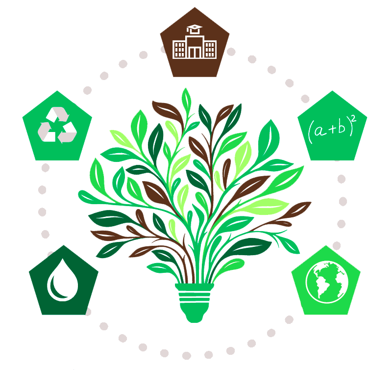

Apostila Digital
Esta seção reúne os principais links de acesso à nossa apostila de vídeo aulas de matemática, organizadas para apoiar o estudo e a prática dos conteúdos do projeto Fórmulas Para o Futuro.
Aprendendo matemática para transformar o futuro com consciência ambiental
Links da Apostila
Selecione o conteúdo desejado: